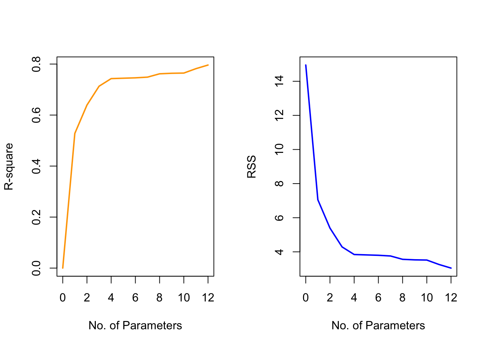
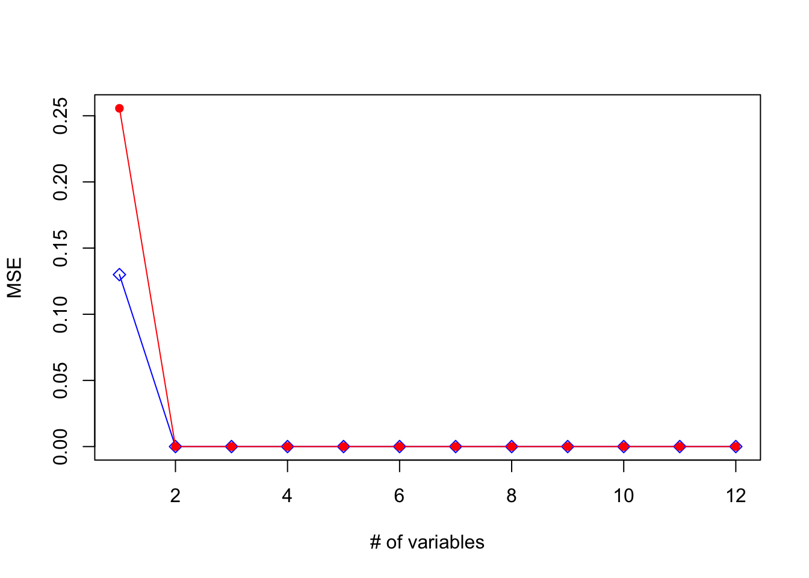
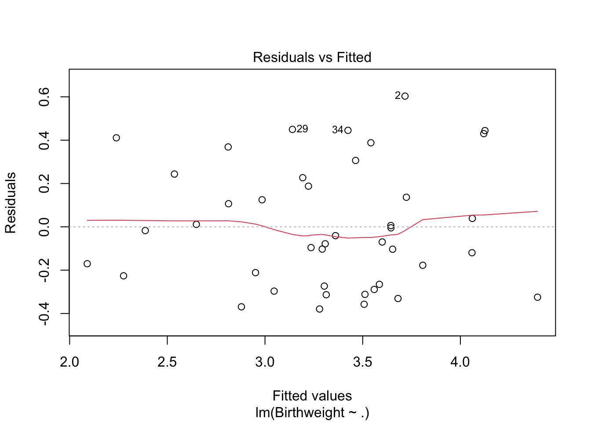
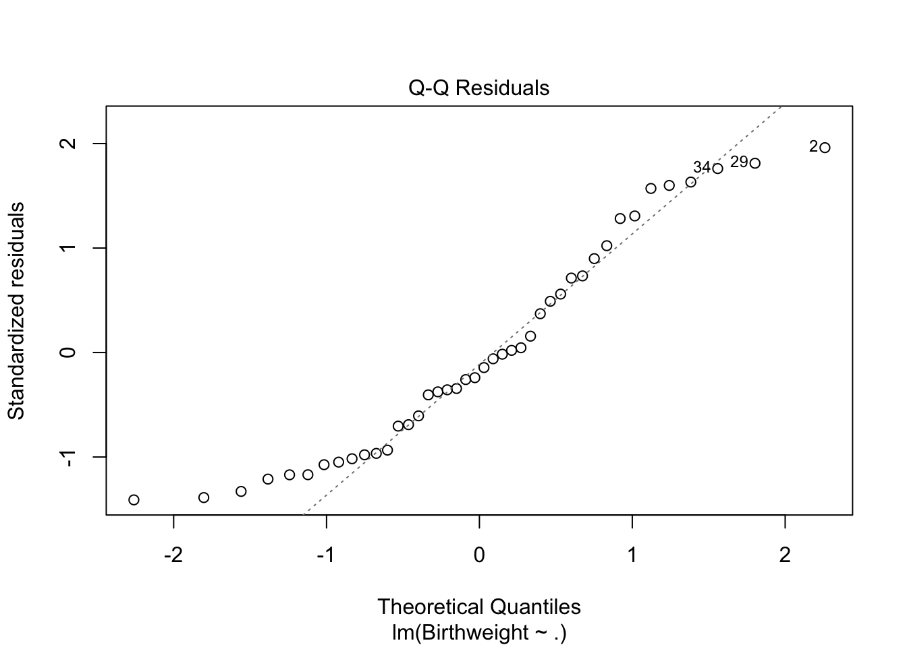
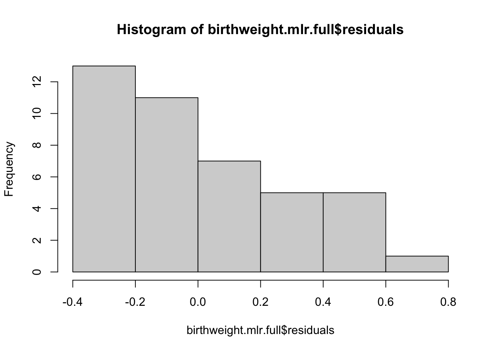

2.11 The Birthweight Data Set Example
The birthweight.csv data set contains data from a study on the birth weight of 42 babies. The variables in the data set are the following:
ID: Unique Identification number of a babyLength: Length of the baby at time of birth in cm (\(X_1\))Birthweight: Weight of the baby at time of birth in kg (\(Y\))Headcirc: Head circumference of the baby at time of birth in cm (\(X_2\))Gestation: Completed weeks of gestation (\(X_3\))smoker: Mother is/is not a smoker {0: No, 1: Yes} (\(X_4\))mage: Mother’s age at time of birth (\(X_5\))mnocig: Mother’s number of cigarettes smoked per day (\(X_6\))mheight: Mother’s height in cm (\(X_7\))mppwt: Mother’s pre-pregnancy weight (\(X_8\))fage: Father’s age at time of birth (\(X_9\))fedyrs: Father’s years of education (\(X_{10}\))fnocig: Father’s number of cigarettes smoked per day (\(X_{11}\))fheight: Father’s height (\(X_{12}\))
## [1] 42 14## ID Length Birthweight Headcirc Gestation smoker mage mnocig mheight mppwt
## 1 1360 56 4.55 34 44 0 20 0 162 57
## 2 1016 53 4.32 36 40 0 19 0 171 62
## 3 462 58 4.10 39 41 0 35 0 172 58
## 4 1187 53 4.07 38 44 0 20 0 174 68
## 5 553 54 3.94 37 42 0 24 0 175 66
## 6 1636 51 3.93 38 38 0 29 0 165 61
## fage fedyrs fnocig fheight
## 1 23 10 35 179
## 2 19 12 0 183
## 3 31 16 25 185
## 4 26 14 25 189
## 5 30 12 0 184
## 6 31 16 0 180Since the ID variable is not of interest in our analysis, we won’t use it in our analysis. For convenience can remove it from the data frame we are working with:
2.11.0.1 Fitting a Multiple Linear Regression
We start by fitting a linear regression model using all the predictors and we print the summary of the LS results:
##
## Call:
## lm(formula = Birthweight ~ ., data = birthweight)
##
## Residuals:
## Min 1Q Median 3Q Max
## -0.37925 -0.25558 -0.05541 0.21700 0.60329
##
## Coefficients:
## Estimate Std. Error t value Pr(>|t|)
## (Intercept) -3.812311 2.080150 -1.833 0.07713 .
## Length 0.034152 0.031456 1.086 0.28656
## Headcirc 0.086594 0.029489 2.937 0.00644 **
## Gestation 0.096565 0.031323 3.083 0.00447 **
## smoker -0.243895 0.168516 -1.447 0.15854
## mage -0.019004 0.018537 -1.025 0.31374
## mnocig 0.001064 0.006854 0.155 0.87770
## mheight 0.004187 0.014153 0.296 0.76944
## mppwt 0.010346 0.011228 0.921 0.36443
## fage 0.007187 0.016327 0.440 0.66305
## fedyrs 0.003220 0.030939 0.104 0.91783
## fnocig 0.003445 0.004013 0.858 0.39769
## fheight -0.013293 0.009614 -1.383 0.17731
## ---
## Signif. codes: 0 '***' 0.001 '**' 0.01 '*' 0.05 '.' 0.1 ' ' 1
##
## Residual standard error: 0.3342 on 29 degrees of freedom
## Multiple R-squared: 0.7834, Adjusted R-squared: 0.6938
## F-statistic: 8.742 on 12 and 29 DF, p-value: 1.011e-06
If we want to check the objects returned by lm and summary(lm...):
## [1] "coefficients" "residuals" "effects" "rank"
## [5] "fitted.values" "assign" "qr" "df.residual"
## [9] "xlevels" "call" "terms" "model"## [1] "call" "terms" "residuals" "coefficients"
## [5] "aliased" "sigma" "df" "r.squared"
## [9] "adj.r.squared" "fstatistic" "cov.unscaled"
The design matrix in this example can be extracted using:
If we want to extract the Regression coefficients including the intercept, i.e. \(\hat{\beta}\), we have
## (Intercept) Length Headcirc Gestation smoker mage
## -3.812311183 0.034151922 0.086594329 0.096565435 -0.243895136 -0.019003806
## mnocig mheight mppwt fage fedyrs fnocig
## 0.001064074 0.004187315 0.010346096 0.007187428 0.003219952 0.003444674
## fheight
## -0.013293205
The fitted values and residuals are obtained by:
Check the calculation for Residual standard error and Multiple R-squared in the summary output:
The residuals \(\mathbf{r}\) are used to estimate the :
\[\hat{\sigma}^2 = \frac{1}{n-p-1}\sum_i r_i^2 = \frac{RSS}{n-p-1}\]
To obtain and estimator for \(\hat{\sigma}\), we can either use the formula (from the notes):
n = dim(birthweight)[1]
p = dim(birthweight)[2] - 1
sqrt(sum(birthweight.mlr.full$residuals^2)/(n- p - 1))## [1] 0.3341631
or we can extract it from the lm object:
## [1] 0.3341631
The coefficient of determination computes as:
\[ \frac{\sum_i (\hat{y}_i - \bar{y})^2}{\sum_i (y_i - \bar{y})^2} = 1 - \frac{RSS}{TSS}\]
We can extract \(R^2\) from the summary output or compute it:
## [1] 0.783425## [1] 0.783425## [1] 0.7834252.11.0.2 Invariance of \(R^2\) & Fitted Values
We can also check the invariance property of \(R^2\) by rescaling one of the variables:
## Center the Length variable
birthweight.new = birthweight
birthweight.new$Length.new = birthweight.new$Length - rep(mean(birthweight.new$Length), 42)
## Model with original `Length`
summary(lm(Birthweight~., data=birthweight.new[-14]))$r.squared## [1] 0.783425## [1] 0.783425If we want, we can also check that the fitted values from both models are identical:
## Difference in fitted values between Model w `Length` - Model w `centered-Length`
### The values are added to make the output cleaner.
sum( fitted(lm(Birthweight~., data=birthweight.new[-14])) - fitted(lm(Birthweight~., data=birthweight.new[-1])) )## [1] -8.881784e-16
Note that the difference is not exactly 0, since there are rounding errors that accumulated when the various R functions are applied.
2.11.0.3 \(R^2\) and \(RSS\) behavior when adding more \(X\)s
We can also visualize how the \(R^2\) and \(RSS\) change as a function of the number of variables in the model to observe that adding a new predictor, even if it is randomly generated and has nothing to do with \(Y\) will decrease \(RSS\) and therefore increase \(R^2\).
So, start with the null model that contains only the intercept and then we add variables one at a time, keeping the \(R^2\) and \(RSS\) that we will plot in the end. We will also randomly generate a new variable randomvar to illustrate that even an unrelevant variable has an effect on both \(R^2\) and \(RSS\):
no.var = 0:12
par(mfrow=c(1,2))
plot(no.var, rsq, xlab="No. of Parameters", ylab = "R-square", type='n');
lines(no.var, rsq, lwd=2, col="orange")
plot(no.var, rss, xlab="No. of Parameters", ylab = "RSS", type='n');
lines(no.var, rss, lwd=2, col="blue")
This is to illustrate why \(R^2\) and \(RSS\) are not good metrics when it comes to model selection. They are useful, because they helps us understand the quality of the model or \(RSS\) is a key ingredient in constructing hypothesis tests, but they are never used for model selection.
2.11.0.4 Rank Deficiency
We have rank deficiency when \(\mathbf{X}\) is not of full rank which leads to the \((\mathbf{X}^T\mathbf{X})\) matrix not being invertible.
Here we illustrate a scenario where it is easy to identify the cause of the problem.
## Create a new variable: the average height of both parents
birthweight.new = birthweight
birthweight.new$aveheight = (birthweight.new$mheight+birthweight.new$fheight)/2
## Regress birthweight against all predictors
summary(lm(Birthweight ~ ., data=birthweight.new))##
## Call:
## lm(formula = Birthweight ~ ., data = birthweight.new)
##
## Residuals:
## Min 1Q Median 3Q Max
## -0.37925 -0.25558 -0.05541 0.21700 0.60329
##
## Coefficients: (1 not defined because of singularities)
## Estimate Std. Error t value Pr(>|t|)
## (Intercept) -3.812311 2.080150 -1.833 0.07713 .
## Length 0.034152 0.031456 1.086 0.28656
## Headcirc 0.086594 0.029489 2.937 0.00644 **
## Gestation 0.096565 0.031323 3.083 0.00447 **
## smoker -0.243895 0.168516 -1.447 0.15854
## mage -0.019004 0.018537 -1.025 0.31374
## mnocig 0.001064 0.006854 0.155 0.87770
## mheight 0.004187 0.014153 0.296 0.76944
## mppwt 0.010346 0.011228 0.921 0.36443
## fage 0.007187 0.016327 0.440 0.66305
## fedyrs 0.003220 0.030939 0.104 0.91783
## fnocig 0.003445 0.004013 0.858 0.39769
## fheight -0.013293 0.009614 -1.383 0.17731
## aveheight NA NA NA NA
## ---
## Signif. codes: 0 '***' 0.001 '**' 0.01 '*' 0.05 '.' 0.1 ' ' 1
##
## Residual standard error: 0.3342 on 29 degrees of freedom
## Multiple R-squared: 0.7834, Adjusted R-squared: 0.6938
## F-statistic: 8.742 on 12 and 29 DF, p-value: 1.011e-06As you see the \(\beta_j\) that corresponds to the new variable cannot be calculated (hence the NA), since aveheight is linearly dependent on both mheight and fheight. At the same time, although the matrix \(\mathbf{X}\) is not of full rank, R produces solutions for the rest of the \(\beta\)s and the fitted model is valid for prediction purposes. The predictions derived from this model will align with those obtained from fitting a linear regression model excluding the columns with NA coefficient.
This issue can be easily fixed, by removing one or more variables. Which variable will be removed depends on the context. For example, we need to (conceptually) answer the question on whether we prefer to have the aveheight or each parent’s height individually.
A harder issue to resolve is when two predictors are not exaclty linearly dependent, but approximately - this means that they are highly correlated, but not an exact function of one another. This is more challenging to deal with and we will discuss it later.
2.11.0.5 Test for the Significance of Predictors
We use the partial \(F\) test
\[F=\frac{\bigl(RSS_0 - RSS_{\alpha}\bigr)/p_{\alpha} - p_0}{RSS_{\alpha}/ \bigl(n-p_{\alpha} \bigr)}\, \sim \, F_{p_{\alpha} - p_0, n-p_{\alpha}}\]
to compare the full model with all available predictors versus the model that exclude father-related variables. That is, the hypothesis test is formulated as
\[\begin{cases}
&H_0: Y \sim 1+ \beta_{1} X_{1} + \ldots + \beta_{8}X_{8} \\
& H_{\alpha}: Y \sim 1+ \beta_1 X_1 + \ldots + \beta_{8}X_{8}+ \ldots + \beta_{12} X_{12}
\end{cases}
\]
## Full Model was fitted before
## and is stored in birthweight.mlr.full
## Reduced Model
birthweight.mlr.reduced1 = lm(Birthweight~ Length+Headcirc+Gestation+smoker+mage+mnocig+mheight+mppwt, data=birthweight)
We can use one function to perform the test:
## Analysis of Variance Table
##
## Model 1: Birthweight ~ Length + Headcirc + Gestation + smoker + mage +
## mnocig + mheight + mppwt
## Model 2: Birthweight ~ Length + Headcirc + Gestation + smoker + mage +
## mnocig + mheight + mppwt + fage + fedyrs + fnocig + fheight
## Res.Df RSS Df Sum of Sq F Pr(>F)
## 1 33 3.5610
## 2 29 3.2383 4 0.32271 0.7225 0.5837
The \(F\) statistic value is 0.7225, and the corresponding \(p\)-value is 0.5837 which means that we fail to reject the null and conclude that the model under the \(H_0\) is preferred. In other words, we prefer the smaller model which implies that the father-related predictors can be removed from the model.
We can also build the \(F\) statistic, by extracting all necessary components:
## [1] 3.560996## [1] 3.238285p0 =9;
palpha = 13;
n=42;
## Partial F test
F = ((RSS0 - RSSalpha)/(palpha-p0))/(RSSalpha/(n-palpha))
F## [1] 0.7224983## [1] 2.701399
the conclusion is the same since \(F < F_{p_{\alpha}-p_0, n-p_{\alpha}}\).
2.11.0.6 Testing for a Single \(\beta_j\)
Let’s test for the significance of variable Length (\(X_1\)), i.e.
\[\begin{cases}
&H_0: Y \sim 1 + \qquad \quad \beta_2 X_2 + \ldots + \beta_{12}X_{12} \\
& H_{\alpha}: Y \sim 1+ \beta_1 X_1+ \beta_2 X_2 + \ldots + \beta_{12} X_{12} \\
\end{cases}
\]
We fit the full model and then compare by means of the partial \(F\) test:
## Full Model was fitted before
## and is stored in birthweight.mlr.full
## Reduced Model
birthweight.mlr.reduced2 = lm(Birthweight~ Headcirc+Gestation+smoker+mage+mnocig+mheight+mppwt+fage+fedyrs+fnocig+fheight, data=birthweight)
## Partial $F$ test
anova(birthweight.mlr.reduced2, birthweight.mlr.full)## Analysis of Variance Table
##
## Model 1: Birthweight ~ Headcirc + Gestation + smoker + mage + mnocig +
## mheight + mppwt + fage + fedyrs + fnocig + fheight
## Model 2: Birthweight ~ Length + Headcirc + Gestation + smoker + mage +
## mnocig + mheight + mppwt + fage + fedyrs + fnocig + fheight
## Res.Df RSS Df Sum of Sq F Pr(>F)
## 1 30 3.3699
## 2 29 3.2383 1 0.13162 1.1787 0.2866## Compare the $F$ value above with the square of the $t$ test
## for the length variable in the output below:
summary(birthweight.mlr.full)##
## Call:
## lm(formula = Birthweight ~ ., data = birthweight)
##
## Residuals:
## Min 1Q Median 3Q Max
## -0.37925 -0.25558 -0.05541 0.21700 0.60329
##
## Coefficients:
## Estimate Std. Error t value Pr(>|t|)
## (Intercept) -3.812311 2.080150 -1.833 0.07713 .
## Length 0.034152 0.031456 1.086 0.28656
## Headcirc 0.086594 0.029489 2.937 0.00644 **
## Gestation 0.096565 0.031323 3.083 0.00447 **
## smoker -0.243895 0.168516 -1.447 0.15854
## mage -0.019004 0.018537 -1.025 0.31374
## mnocig 0.001064 0.006854 0.155 0.87770
## mheight 0.004187 0.014153 0.296 0.76944
## mppwt 0.010346 0.011228 0.921 0.36443
## fage 0.007187 0.016327 0.440 0.66305
## fedyrs 0.003220 0.030939 0.104 0.91783
## fnocig 0.003445 0.004013 0.858 0.39769
## fheight -0.013293 0.009614 -1.383 0.17731
## ---
## Signif. codes: 0 '***' 0.001 '**' 0.01 '*' 0.05 '.' 0.1 ' ' 1
##
## Residual standard error: 0.3342 on 29 degrees of freedom
## Multiple R-squared: 0.7834, Adjusted R-squared: 0.6938
## F-statistic: 8.742 on 12 and 29 DF, p-value: 1.011e-06## [1] 1.1787212.11.0.7 Testing for all the predictors
The \(F\) test statistic and corresponding \(p\)-value in the summary output correspond to the following hypothesis:
\[\begin{cases}
&H_0: Y \sim 1 \\
& H_{\alpha}: Y \sim 1+ \beta_1 X_1 + \ldots + \beta_{j-1}X_{j-1} + \beta_{j} X_{j} + \beta_{j+1} X_{j+1} + \ldots + \beta_p X_p \\
\end{cases}
\]
which is the so-called overall \(F\) test.
## value numdf dendf
## 8.741902 12.000000 29.000000
In this case, the \(F\) value is equal to 8.74 and it follows an \(F_{12, 29}\) distribution.The corresponding \(p\)-value is equal to 1.011e-06 which is much less than \(\alpha=0.05\). This implies that we reject the null and conclude that the model with all the predictors is more adequate compared to the intercept-only model.
2.11.0.8 Categorical Variables
In the birthweight data set we only have binary variables, so for illustration purposes, we will create a new categorical variable, mage.group with 3 levels: \(a\)=below 20, \(b\)=20-30, and \(c\)=above 30:
birthweight.new = birthweight
birthweight.new$mage.group <- as.factor(ifelse(birthweight.new$mage <20, 'a', ifelse(birthweight.new$mage >30, 'c', 'b') ) )
Let’s fit the model with the age group variable and look at the design matrix:
birthweight.mlr.categorical = lm(Birthweight~., data=birthweight.new[,-6])
model.matrix(birthweight.mlr.categorical)## (Intercept) Length Headcirc Gestation smoker mnocig mheight mppwt fage fedyrs
## 1 1 56 34 44 0 0 162 57 23 10
## 2 1 53 36 40 0 0 171 62 19 12
## 3 1 58 39 41 0 0 172 58 31 16
## 4 1 53 38 44 0 0 174 68 26 14
## 5 1 54 37 42 0 0 175 66 30 12
## 6 1 51 38 38 0 0 165 61 31 16
## 7 1 52 34 40 0 0 157 50 31 16
## 8 1 53 33 42 0 0 165 61 21 10
## 9 1 54 38 38 0 0 172 50 20 12
## 10 1 50 35 38 0 0 157 48 22 14
## 11 1 53 33 41 0 0 164 62 37 14
## 12 1 51 36 40 0 0 168 53 29 16
## 13 1 52 36 38 0 0 164 57 35 16
## 14 1 53 33 41 0 0 155 55 25 14
## 15 1 53 34 40 0 0 167 60 30 16
## 16 1 48 33 37 0 0 158 54 39 10
## 17 1 48 35 39 0 0 162 62 27 14
## 18 1 48 33 34 0 0 167 64 25 12
## 19 1 53 34 39 0 0 165 57 23 14
## 20 1 43 32 33 0 0 149 45 26 16
## 21 1 53 38 40 1 2 170 59 24 12
## 22 1 51 33 41 1 7 160 53 24 16
## 23 1 50 30 37 1 7 165 60 20 14
## 24 1 50 35 39 1 7 159 52 23 14
## 25 1 48 30 37 1 7 163 47 20 10
## 26 1 46 32 35 1 7 166 57 37 14
## 27 1 48 30 33 1 7 161 50 20 10
## 28 1 58 39 41 1 12 173 70 38 14
## 29 1 53 34 40 1 12 163 49 41 12
## 30 1 49 36 40 1 12 152 48 37 12
## 31 1 52 35 38 1 12 165 64 38 14
## 32 1 51 38 39 1 17 157 48 32 12
## 33 1 50 33 39 1 17 156 53 24 12
## 34 1 50 33 45 1 25 163 54 30 16
## 35 1 52 36 39 1 25 170 78 40 16
## 36 1 53 37 41 1 25 161 66 46 16
## 37 1 52 37 40 1 25 170 62 30 10
## 38 1 52 33 39 1 25 181 69 23 16
## 39 1 49 34 38 1 25 162 57 32 16
## 40 1 53 34 41 1 35 163 51 31 16
## 41 1 47 33 35 1 35 170 57 23 12
## 42 1 53 32 40 1 50 168 61 31 16
## fnocig fheight mage.groupb mage.groupc
## 1 35 179 1 0
## 2 0 183 0 0
## 3 25 185 0 1
## 4 25 189 1 0
## 5 0 184 1 0
## 6 0 180 1 0
## 7 0 173 1 0
## 8 25 185 1 0
## 9 7 172 0 0
## 10 0 179 1 0
## 11 0 170 1 0
## 12 0 181 1 0
## 13 0 183 0 1
## 14 25 183 1 0
## 15 25 182 1 0
## 16 0 171 1 0
## 17 0 178 1 0
## 18 25 175 1 0
## 19 2 193 0 0
## 20 0 169 1 0
## 21 12 185 1 0
## 22 12 176 1 0
## 23 0 183 0 0
## 24 25 200 1 0
## 25 35 185 1 0
## 26 25 173 0 1
## 27 35 180 1 0
## 28 25 180 0 1
## 29 50 191 0 1
## 30 25 170 1 0
## 31 50 180 1 0
## 32 25 169 1 0
## 33 7 179 1 0
## 34 0 183 1 0
## 35 50 178 1 0
## 36 0 175 0 1
## 37 25 181 1 0
## 38 2 181 1 0
## 39 50 194 0 1
## 40 25 185 1 0
## 41 50 186 1 0
## 42 0 173 0 1
## attr(,"assign")
## [1] 0 1 2 3 4 5 6 7 8 9 10 11 12 12
## attr(,"contrasts")
## attr(,"contrasts")$mage.group
## [1] "contr.treatment"
When fitting the regression model, R automatically converted the factor to the appropriate number of indicator/variables which were included in the design matrix. We observe that level \(a\) is the baseline and the two generated columns are levels \(b\) and \(c\).
In general, the reference level can be changed as well as the coding. Those changes will affect the estimated \(\beta\) coefficients, but they will not affect the fitted or predicted values.
2.11.0.9 Mean Response Estimation & Prediction
In practice, we have target values for which we need to estimate the mean response of values for which we want to do prediction.
Since this is not the case here, in order to illustrate both methods, we use as inputs the mean value of every predictor. This is done as follows:
Now, we create the \(X\) data.frame to use as an input in the predict() function:
Using the predict function we have:
## 1
## 3.3128572.11.0.10 Training vs. Testing Error
In this example, and in linear regression models, as we introduce more variables, training error (measured by \(RSS\) or \(MSE\)) consistently decreases. However, this reduction in training error does not guarantee a corresponding decrease in test error, which measures prediction accuracy on independent test data. To demonstrate this, we randomly split our dataset into 60% training and 40% test portions, progressively adding predictors. This approach highlights how additional predictors can lower training error while test error may not follow the same trend!
n = dim(birthweight)[1] ## sample size
p = dim(birthweight)[2]-1 ## number of non-intercept predictors
ntrain = round(n*0.6)
train.id = sample(1:n, ntrain)
train.id## [1] 7 15 40 13 10 39 21 11 19 24 12 29 38 32 8 30 27 26 16 3 25 36 35 42 31## [1] 3.77 3.15 3.19 3.23 3.42 3.18 3.64 3.35 2.90 2.51 3.27 3.59 3.41 3.32 3.65
## [16] 3.32 1.92 2.05 3.11 4.10 2.37 3.55 3.86 2.75 3.00## [1] 4.55 4.32 4.07 3.94 3.93 3.63 3.20 3.03 2.92 2.65 3.14 2.78 4.57 2.74 3.87
## [16] 3.53 2.66for(i in 1:p){
myfit = lm( birthweight[train.id, 2]~., birthweight[ train.id, c(1:i, (p+1)) ] )
train.Y.pred = myfit$fitted
train.MSE[i] = mean((train.Y - train.Y.pred)^2)
test.Y.pred = predict(myfit, newdata = birthweight[-train.id, ])
test.MSE[i] = mean((test.Y - test.Y.pred)^2)
}
plot(c(1, p), range(train.MSE, test.MSE), type="n", xlab="# of variables", ylab="MSE")
points(train.MSE, col = "blue", pch = 5)
lines(train.MSE, col = "blue", pch = 5)
points(test.MSE, col = "red", pch = 16)
lines(test.MSE, col = "red", pch = 16)
In this example both errors are very small which makes it hard to illustrate the differences in the two errors, but feel free to use this code in other examples to observe more patterns between training/testing errors.
In general, we expect that in each iteration, the blue line (representing the training error) consistently exhibits a monotonically decreasing trend, signifying the reduction of training error as more predictors are incorporated. On the other hand, the red line’s (testing error) trajectory may not uniformly decrease.
2.11.0.11 Test for Outliers
In this example, we check the data set for unusual observations. Specifically, we will check for:
To identify outliers, we use the Bonferroni test. For that purpose, we need to compute the studentized residuals \(t_{i}\) ( an externally standardized version of residuals ). Under the null hypothesis \(H_{0}\), \(t_{i} \sim t_{n-p}\), where \(n\) is the sample size and \(p\) is the number of predictors without the intercept. We perform this test for all \(n\) observations testing case at level \(\frac{\alpha}{n}\):
## We work with the full model again.
n = dim(birthweight)[1];
p = length(variable.names(birthweight.mlr.full)); We first compute the studentized residuals using the rstudent R function and the Bonferroni critical value using Student’s distribution:
## Computing Studentized Residuals #
birthweight.resid = rstudent(birthweight.mlr.full);
## Critical value WITH Bonferroni correction #
bonferroni_cv = qt(.05/(2*n), n-p-1)
bonferroni_cv## [1] -3.60755Now, we need to find which (if any) studentized residuals exceed the Bonferroni critical value:
## Sorting the residuals in descending order to find outliers (if any)
birthweight.resid.sorted = sort(abs(birthweight.resid), decreasing=TRUE)[1:10]
print(birthweight.resid.sorted)## 2 29 34 1 28 20 42 24 19
## 2.068621 1.890299 1.830714 1.682375 1.645611 1.613154 1.435773 1.411769 1.347956
## 39
## 1.324123birthweight.outliers = birthweight.resid.sorted[abs(birthweight.resid.sorted) > abs(bonferroni_cv)]
print(birthweight.outliers)## named numeric(0)Above, we computed a t-value of \(|-3.61|\) at \(\alpha=0.05\). If an observation’s studentized residual is higher (in absolute value) than the critical value of the \(T\) distribution with Bonferroni correction, then this observation will be considered an outlier. According to this criterion, we can see that we don’t have any outliers in the data set, since none of the studentized residuals is higher than \(|-3.61|\).
2.11.0.12 Checking Model Assumptions
We start by using residual plots and specifically the residuals against fitted values:

The points on the plot are randomly scattered around the zero line, so we conclude that the constant variance assumption is satisfied.
We continue by checking the normality assumption:


We seem to have some departures from the normality assumption in this case.
2.11.0.13 Collinearity: Car Seat Position Data (a Faraway data set)
Car drivers like to adjust the seat position for their own comfort. Car designers would find it helpful to know how different drivers will position the seat depending on their size and age. Researchers at the HuMoSim laboratory at the University of Michigan collected the following data on 38 drivers:-
Age: Drivers age in years -
Weight: Drivers weight in lbs -
HtShoes: height with shoes in cm -
Ht: height without shoes in cm -
Seated: seated height in cm -
Arm: lower arm length in cm -
Thigh: thigh length in cm -
Leg: lower leg length in cm -
hipcenter: horizontal distance of the midpoint of the hips from a fixed location in the car in mm
To read the data we need to load the faraway library and then open the seatpos data set.
Let’s start by fitting the full model with hipcenter as a response and everything else as a predictor:
##
## Call:
## lm(formula = hipcenter ~ ., data = seatpos)
##
## Residuals:
## Min 1Q Median 3Q Max
## -73.827 -22.833 -3.678 25.017 62.337
##
## Coefficients:
## Estimate Std. Error t value Pr(>|t|)
## (Intercept) 436.43213 166.57162 2.620 0.0138 *
## Age 0.77572 0.57033 1.360 0.1843
## Weight 0.02631 0.33097 0.080 0.9372
## HtShoes -2.69241 9.75304 -0.276 0.7845
## Ht 0.60134 10.12987 0.059 0.9531
## Seated 0.53375 3.76189 0.142 0.8882
## Arm -1.32807 3.90020 -0.341 0.7359
## Thigh -1.14312 2.66002 -0.430 0.6706
## Leg -6.43905 4.71386 -1.366 0.1824
## ---
## Signif. codes: 0 '***' 0.001 '**' 0.01 '*' 0.05 '.' 0.1 ' ' 1
##
## Residual standard error: 37.72 on 29 degrees of freedom
## Multiple R-squared: 0.6866, Adjusted R-squared: 0.6001
## F-statistic: 7.94 on 8 and 29 DF, p-value: 1.306e-05Note that the \(p\)-value of the overall \(F\) test is very small (1.306e-05), which means that at least one of the predictors is statistically significant, but at the same time none of the predictors is statistically significant according to the individual \(t\) tests. This is strange and definitely a red flag that we may have collinearity issues.
To investigate the presence of high correlated predictors as well as the linear correlation of the response with each of the predictors, we start by checking the correlation matrix:
## We use the round function with 2 digits, to round the numbers in the output
## This only affects the printed numbers, not the ones R has stored.
round(cor(seatpos), dig=2)## Age Weight HtShoes Ht Seated Arm Thigh Leg hipcenter
## Age 1.00 0.08 -0.08 -0.09 -0.17 0.36 0.09 -0.04 0.21
## Weight 0.08 1.00 0.83 0.83 0.78 0.70 0.57 0.78 -0.64
## HtShoes -0.08 0.83 1.00 1.00 0.93 0.75 0.72 0.91 -0.80
## Ht -0.09 0.83 1.00 1.00 0.93 0.75 0.73 0.91 -0.80
## Seated -0.17 0.78 0.93 0.93 1.00 0.63 0.61 0.81 -0.73
## Arm 0.36 0.70 0.75 0.75 0.63 1.00 0.67 0.75 -0.59
## Thigh 0.09 0.57 0.72 0.73 0.61 0.67 1.00 0.65 -0.59
## Leg -0.04 0.78 0.91 0.91 0.81 0.75 0.65 1.00 -0.79
## hipcenter 0.21 -0.64 -0.80 -0.80 -0.73 -0.59 -0.59 -0.79 1.00We observe that the response is highly correlated with most of the variables which justifies the low \(p\)-value in the overall \(F\) test. However, we have highly correlated predictors (e.g. Corr(Leg, HtShoes)=0.91) which means that we will have collinearity.
Let’s look at the condition number of the \(\mathbf{X}^T\mathbf{X}\) matrix. Recall that the condition number is not scale invariant. This implies that calculating it before standardizing the matrix might lead to incorrect conclusions. So, let’s standardize it first:
## Extract the design matrix and remove the column of 1s that corresponds to the intercept.
x = model.matrix(position.full)[,-1]
## Standardize the matrix
x = x - matrix(apply(x,2, mean), 38,8, byrow=TRUE)
x = x / matrix(apply(x, 2, sd), 38,8, byrow=TRUE)
apply(x,2,mean)## Age Weight HtShoes Ht Seated
## -5.843279e-18 2.534522e-16 9.524545e-16 1.577685e-16 -1.079546e-15
## Arm Thigh Leg
## -1.285521e-16 9.860533e-17 -1.029878e-16## Age Weight HtShoes Ht Seated Arm Thigh Leg
## 1 1 1 1 1 1 1 1Compute the condition number using the standardized matrix:
## [1] 209.90786979 45.76108236 17.15850736 8.91545889 7.18612386 5.14944541
## [7] 1.86274750 0.05876483## [1] 59.7662The condition number is 59.77, larger than 30, so we conclude that collinearity is present.
Let’s also check the Variance Inflation Factor (VIF):
## Age Weight HtShoes Ht Seated Arm Thigh Leg
## 2.00 3.65 307.43 333.14 8.95 4.50 2.76 6.69## [1] 17.53368Note that the standard error for the coefficient associated with HtShoes is 17.5 times larger than it would have been without collinearity.
The next step is to investigate which variable to remove. To do so, we study the pairwise correlations and perform partial \(F\)-tests as follows:
## [1] 0.9389819## [1] 0.965607## [1] 0.9465523##
## Call:
## lm(formula = hipcenter ~ Age + Weight + Ht + Seated, data = seatpos)
##
## Residuals:
## Min 1Q Median 3Q Max
## -90.869 -21.163 -3.144 26.773 59.423
##
## Coefficients:
## Estimate Std. Error t value Pr(>|t|)
## (Intercept) 478.65890 159.73362 2.997 0.00515 **
## Age 0.58396 0.42573 1.372 0.17943
## Weight -0.01535 0.31640 -0.049 0.96159
## Ht -4.99025 1.64389 -3.036 0.00466 **
## Seated 2.04632 3.41283 0.600 0.55287
## ---
## Signif. codes: 0 '***' 0.001 '**' 0.01 '*' 0.05 '.' 0.1 ' ' 1
##
## Residual standard error: 36.83 on 33 degrees of freedom
## Multiple R-squared: 0.6599, Adjusted R-squared: 0.6186
## F-statistic: 16.01 on 4 and 33 DF, p-value: 2.224e-07##
## Call:
## lm(formula = hipcenter ~ Ht, data = seatpos)
##
## Residuals:
## Min 1Q Median 3Q Max
## -99.956 -27.850 5.656 20.883 72.066
##
## Coefficients:
## Estimate Std. Error t value Pr(>|t|)
## (Intercept) 556.2553 90.6704 6.135 4.59e-07 ***
## Ht -4.2650 0.5351 -7.970 1.83e-09 ***
## ---
## Signif. codes: 0 '***' 0.001 '**' 0.01 '*' 0.05 '.' 0.1 ' ' 1
##
## Residual standard error: 36.37 on 36 degrees of freedom
## Multiple R-squared: 0.6383, Adjusted R-squared: 0.6282
## F-statistic: 63.53 on 1 and 36 DF, p-value: 1.831e-09## Analysis of Variance Table
##
## Model 1: hipcenter ~ Ht
## Model 2: hipcenter ~ Age + Weight + Ht + Seated
## Res.Df RSS Df Sum of Sq F Pr(>F)
## 1 36 47616
## 2 33 44774 3 2841.6 0.6981 0.5599Based on the \(F\) test provided in the ANOVA table, we conclude that the reduced model with Ht as the only variable is better than the model that includes Age, Weight, Ht and Seated.